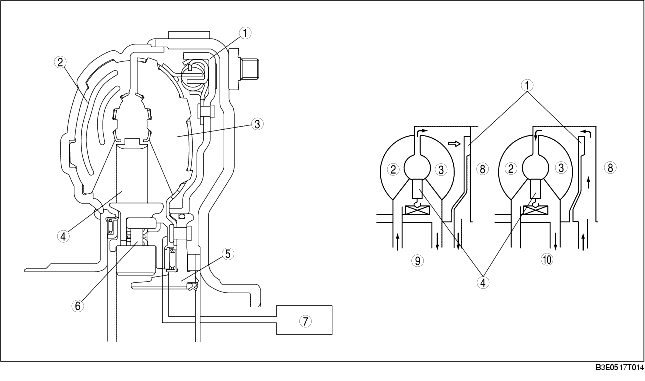

• Le convertisseur de couple avec commande TCC est constitué de la roue de turbine, la turbine de pompe, le stator, et le piston TCC, comme le montre l'illustration. Le piston TCC s'engage avec la roue de turbine et glisse sur le moyeu de turbine, pour être poussé et entrer en contact avec le couvercle du convertisseur de couple pendant le fonctionnement de la commande TCC. Le piston TCC comprend un ressort amortisseur de torsion qui absorbe les fluctuations du couple moteur pendant la commande TCC.

.